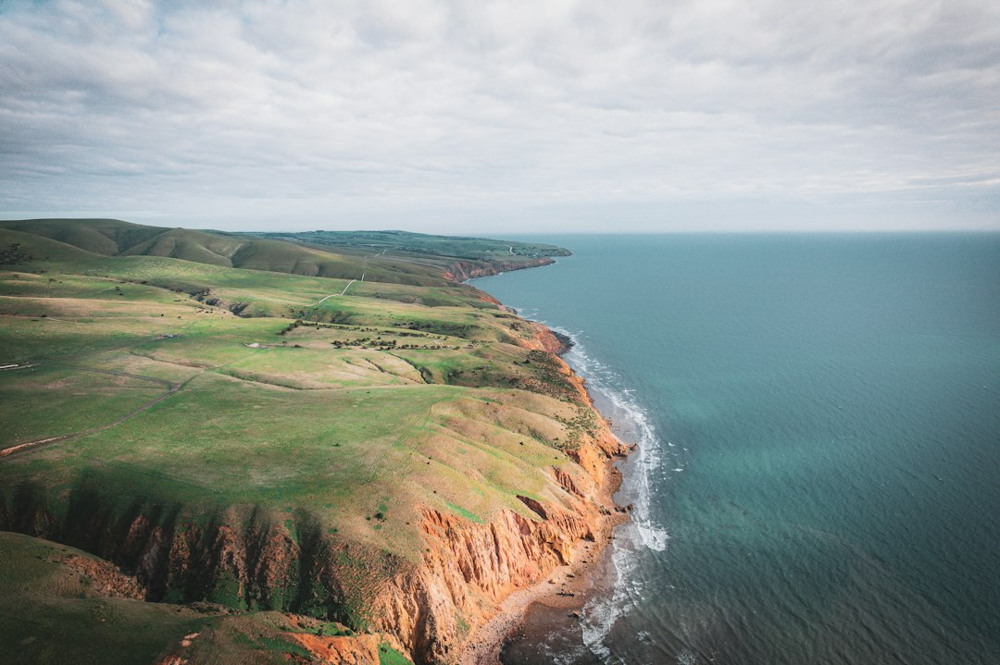

A useful Adelaide earthworks brief names the finished ground condition, supplies dimensions or supplied levels, measures the operating route, separates known services from assumptions, and explains the expected handling of excavated material. The published guide separates 6 scopes: earth works, excavation, site cuts and land levelling, trenching and drainage, soil and spoil removal, and tight-access work, because each scope carries a different job decision and handoff question.
For homeowners and site planners comparing earthmoving adelaide options, the practical starting point is not the machine size, but the ground result the next trade or owner must receive.
Earthmoving Adelaide Explained
Simply Earthworks frames the first question around the ground outcome: platform, fall, trench, cleared zone or material result. That turns a broad Adelaide request into a checkable handoff. Rough clearing, excavation to a nominated depth, and a shaped surface for another trade are different briefs.
The early brief should state what the machine should leave behind, then attach the facts that reduce guessing. Useful inputs include dimensions, supplied levels, access measurements, known services, photos or plans, material expectations and preferred timing. Sensitive documents do not belong in an early enquiry. A provider must still inspect and confirm their own scope, price, availability and terms.
Keep observed conditions separate from unresolved questions. If soil, rock, groundwater, contamination, private services, approvals or design requirements have not been checked, mark them as unknowns. That gives the reviewer a clear line between known site evidence and items that need locating, testing or advice.
Choose the scope by responsibility
The published guide separates 6 practical scopes because a single request can hide several responsibilities. Land shaping asks for agreed levels, falls, cut-and-fill assumptions and the next handoff. Excavation is narrower when the task is removing material to a nominated profile, area or depth. Site cuts and land levelling focus on supplied levels, falls and formation for building, landscaping or access work.
Trenching and drainage needs coordination with the relevant licensed trade because the excavation follows nominated lines and grades. Soil and spoil removal depends on material handling, including separation, stockpiling, loading, transport, receiving charges and imported material where needed. Tight-access work asks whether the whole route can function, not just whether a machine can pass through one opening.
For a related crawlable overview, see this guide to earthmoving services in Adelaide. Use it as neighbouring context, then keep the actual job decision anchored to the measured property and the required finish.
Measure the route, not just the gate
Access is the route from street to work face. The published guide asks for gates, turns, eaves, gradients, surfaces, loading space and features that must remain intact. CBD loading limits, inner-suburb gardens, coastal density, foothills slopes and northern growth areas raise different planning questions, but the location does not prove the exact ground or access condition.
A concise access note can list:
- the narrowest opening and any tight turns between the street and work area
- overhead limits such as eaves or low structures
- surface changes, gradients and areas that should remain intact
- where spoil can be stockpiled, loaded or removed
- nearby structures, fences, garden areas or paths to protect
Photos help, but measurements carry more decision value. A provider may still need to inspect because a single clearance point does not confirm working room, loading space or spoil transfer.
Put underground and approval questions on the record
The published guide is careful about underground services and approvals. Public plans may not show private services or exact depth, so the person controlling the work must arrange suitable asset information and site-specific controls. If physical confirmation is required, treat it as a planning item rather than a guess.
Approval questions should be handled with the same discipline. Development approval depends on the proposal, the property and planning controls. The guide points readers to current PlanSA information and qualified advice where levels, drainage, retaining, heritage or other regulated matters may be affected. Without those details, a suburb name does not answer the approval question.
Good quote notes should identify unresolved items plainly: asset location, design input, drainage effects, retaining interfaces, lawful spoil receiving, testing or survey evidence, and the party who accepts the finished handoff.
Read a quote through its assumptions
A useful quote should expose what it includes and what would trigger a variation. The published guide groups those assumptions under plant and access, ground and quantities, material handling, and completion. Read those headings before comparing prices, because one figure may have different assumptions about cartage, receiving charges, reinstatement, survey evidence or unsuitable-material allowances.
Ask how the provider has treated equipment category, attachments, mobilisation and the complete operating route. Ask which dimensions, observed conditions, rock allowances or unsuitable-material assumptions are included. For spoil, ask whether material will be separated, stockpiled, loaded, transported or received elsewhere, and who carries any receiving charge or imported-material cost.
The completion line is as important as the first scrape. Confirm the achieved profile, whether testing or survey evidence is expected, what reinstatement is included, and who accepts the handoff. A clear completion note turns a vague site task into a defined result.
- Name the result. Describe the platform, fall, trench, cleared zone or material outcome required at handoff.
- Measure access. Record gates, turns, overhead limits, gradients, surfaces, loading space and protected features.
- Separate unknowns. List what is observed, what is supported by plans, and what still needs locating, testing or advice.
- Describe spoil. State whether material is expected to remain, be stockpiled, be loaded, or be removed.
- Confirm scope. Let the provider inspect and confirm price, timing, availability and terms in writing.
| Decision | Use when | Question to ask |
|---|---|---|
| Earth works | Land needs shaping around agreed levels, falls or cut-and-fill assumptions. | What finished condition must the next person receive? |
| Excavation | Material must be removed to a nominated area, depth or profile. | Which dimensions and underground service checks are confirmed? |
| Trenching and drainage | A narrow route must follow nominated lines or grades for a following trade. | Who provides the grade, line and licensed trade requirements? |
| Soil and spoil removal | Excavated material must be loaded, transported or received under stated assumptions. | What material classification and receiving arrangement is assumed? |
| Tight-access work | The work area sits behind constrained openings, turns or overhead limits. | Has the full route from street to work face been measured? |
Common questions
What is the difference between earthmoving and excavation? Earthmoving is the broader shaping and preparation of ground. Excavation is the removal of material to a defined profile, area or depth, and one project may need both.
What should I send before asking for a review? Send the suburb, job type, approximate area or depth, material expectations, measured access, photos or plans and preferred timing. Do not include sensitive documents at the first enquiry stage.
Does an Adelaide suburb prove the ground conditions? No. Location is context only, because soil, rock, groundwater, contamination, underground assets and approvals still need site-specific checking.
Who checks underground services? The person controlling the work must arrange suitable asset information and site-specific controls. Public plans may not show private services or exact depth.
Can tight-access yards be reviewed? Yes, when the full access route is measured, including gates, turns, overhead limits, surfaces and loading space. Passing one opening does not prove the machine can work or move spoil.
This guide covers planning an Adelaide earthworks brief, including scope choice, access notes, spoil assumptions, underground service questions and quote review.